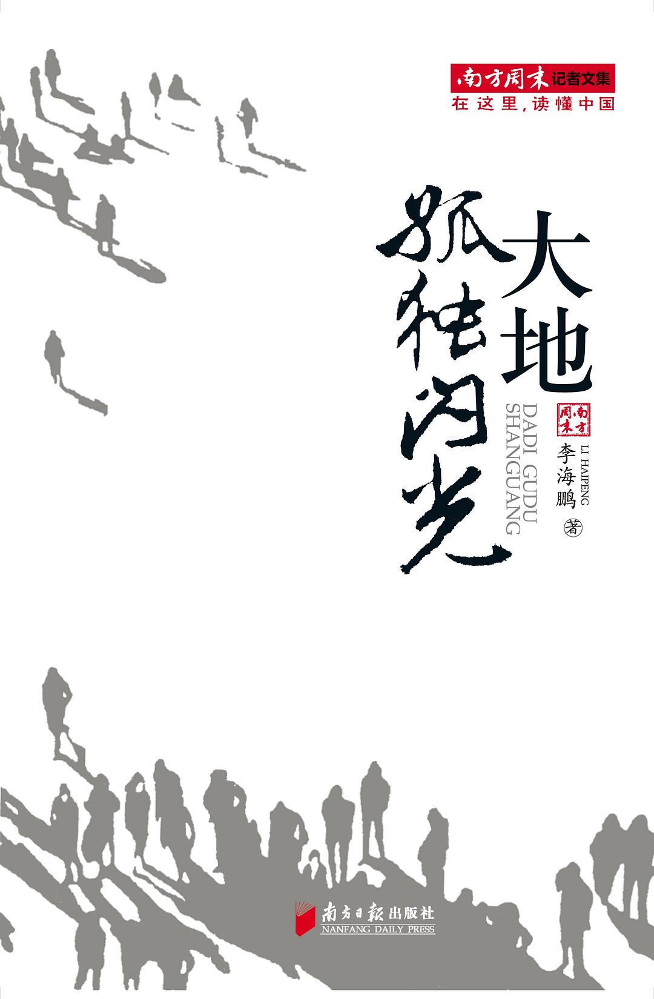

《大地孤独闪光》

总体观点
特稿是非虚构的文学峰峦，更是为被时代列车碾压的小人物立传的良心契约：李海鹏以《举重冠军之死》彻底改变了中国特稿写作史，证明真实新闻具备震撼人心的悲剧美学力量。
宏大国家叙事必须向每一个具体生命的痛感让步：在奥运金牌的狂欢与GDP飞速狂飙的盛世背后，作者将探照灯打向辽宁铁岭、青海玉树与西北荒野上那些被体制遗弃、默默咽下苦水的无名者。
真正的写作者应当在大地上保留‘孤独闪光’的风骨：拒绝沦为官方公关的传声筒或迎合大众情绪的标题党，以近乎苛刻的文字洁癖和对正义的执拗守护，抵抗时代的健忘与平庸。
核心观点
-
1. 才力之死的制度悲剧：举国体制下被报废的冠军肉身
《举重冠军之死》成为中国新闻史教材经典；昔日亚运冠军才力在退役后因贫病交加在医院走廊惨死，揭开举国体制对运动员工具化使用的残酷代价。
才力死时家里连买骨灰盒的钱都没有，病床边只有未付清的药费单据和满屋落灰的金牌，金牌的璀璨与死亡的苍凉构成刺目对比。 -
2. 灾难救援中的荒诞与真实：玉树高原上的生命直觉
在《车陷玉树》中，李海鹏剥离了灾难报道中千篇一律的感动与煽情，极其冷酷真实地呈现出高海拔缺氧、物资哄抢与生命自救的复杂混沌。
描写救援卡车在泥泞山口抛锚时，志愿者与灾民之间既有分发压缩饼干时的感激拥抱，也有为了几顶帐篷大打出手的原始求生本能。 -
3. 新闻记者的职业伦理：站在鸡蛋一边对抗坚硬的巨石
特稿记者不仅是事实记录者，更应当是正义底线的守护者；当面对公权力与大资本的合谋时，记者的使命是用笔筑起防线，绝不后退半寸。
回顾在煤矿透水事故现场突破重重封锁调查死难矿工真实名单的惊险历程，坚信唯有查明每一个名字才是对生命的敬畏。 -
4. 文字的文学性与硬度：海明威式的克制叙事美学
李海鹏推崇简洁、利落、充满骨骼感的硬汉散文风格，坚决剔除一切廉价的形容词煽情，用最具穿透力的白描细节让事实本身发出雷鸣。
描写一位母亲在废墟上寻找孩子书包时的神态，仅用一句‘她蹲在瓦砾堆里把拉链拉开又拉上，整整拉了一下午’，道尽撕心裂肺之痛。 -
5. 大地孤独闪光的深意：在喧嚣时代守住独立的精神灯塔
大地辽阔荒凉，个体卑微如尘埃，但正是那些在深夜依然坚持独立思考、不被世俗同化的孤独心灵，构成了支撑民族良知的最后星光。
作者漫步在冬日北方荒原，眺望远方地平线上孤零零的一点列车灯光，领悟到坚守正义的创作者注定要在孤独中照亮夜空。
全书结构
-
第一辑：大地的伤口（奠定非虚构里程碑的特稿名篇）
收录轰动全国的震撼特稿《举重冠军之死》《车陷玉树》《受难者的尊严》《黑社会之死》；直击中国转型期最残酷的社会现实。
《举重冠军之死》全文逐字重温才力三十三年从荣耀巅峰跌入贫病深渊的完整宿命，堪称中国当代非虚构散文最高峰。 -
第二辑：时代的暗流（盛世狂欢背后的微小声息）
聚焦奥运安保下的菜贩、城市拆迁钉子户、民工子弟学校搬迁等小人物题材；以充满诗意的镜头感捕捉历史缝隙中的微光。
描写北京胡同里一位修鞋匠在奥运倒计时牌下的平静劳作，展现普通市民在宏大国家盛典面前朴素从容的生存韧性。 -
第三辑：新闻人的良心防线（关于真相、伦理与正义）
李海鹏作为《南方周末》高级记者的职业反思随笔；探讨新闻客观性、记者的特权陷阱、面对受害人痛苦时的道德困境。
深入辨析新闻采访中‘过度共情’与‘冷酷观察’的边界，阐明记者如何避免将他人的受难变为自己成名的消费材料。 -
第四辑：个人的文学漫游（对虚构经典与语言大师的致敬）
文论随笔精选；畅谈海明威、纳博科夫、卡佛、博尔赫斯的写作技艺；阐释汉语非虚构写作如何从西方文学传统中汲取叙事养分。
剖析海明威‘冰山理论’在现代深度调查报道中的运用，教导年轻记者如何学会隐藏百分之八十的情绪以增强文本爆发力。 -
第五辑：大地孤独闪光（代跋与时代沉思）
收录作者总结性长文与自序；回望多年奔波在全国灾难现场与田野一线的记者生涯，向大地上每一个坚忍生活着的同胞致以最高敬意。
作者总结：我们写下这些故事，不是为了博取廉价的眼泪，而是为了在未来的岁月里，人们能记起这片土地上曾有人如此有尊严地活过。